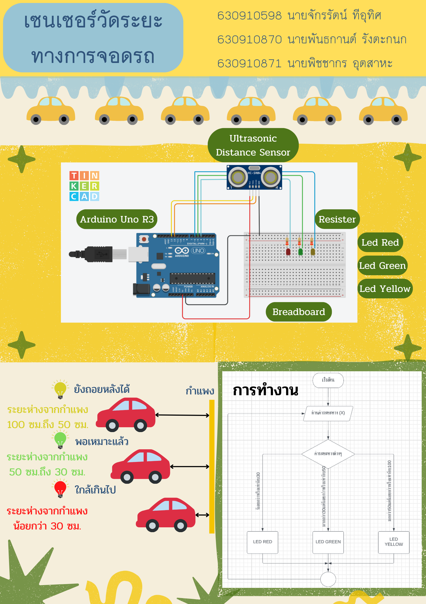

My Project

Distance Measurement Sensor for Parking
Parking distance measurement sensors are devices used to detect the distance between the sensor itself and nearby objects or parked vehicles. The primary objective of distance measurement sensors for parking is to assist drivers in parking safely and conveniently. The sensor system helps in efficiently controlling parking maneuvers, reducing the risk of accidents in parking areas by detecting the proximity of objects or vehicles nearby.